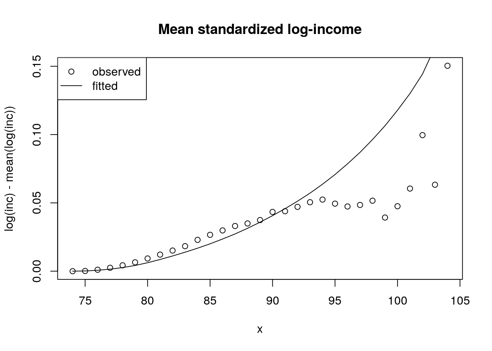
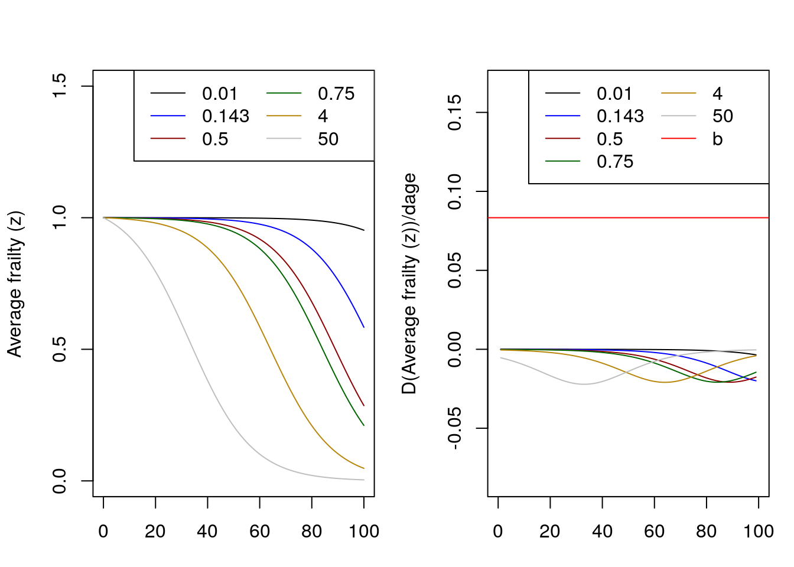
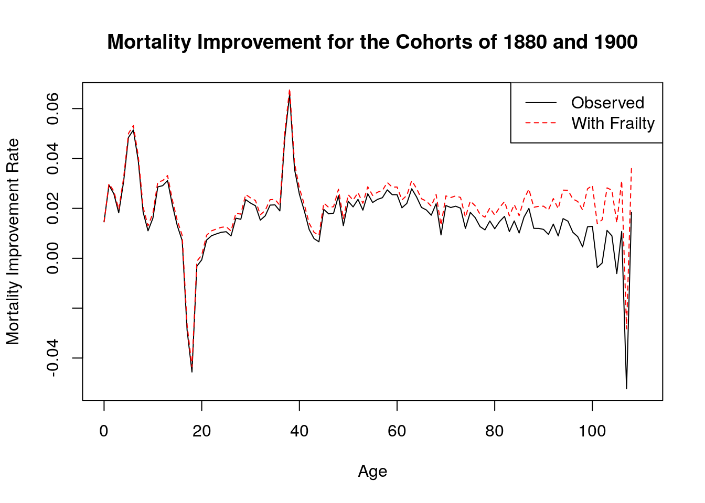

Chapter 4 Gamma Frailty with Applications
4.1 From survival to hazards
We have \[ \bar S(x) = {1 \over \left(1 + \sigma^2 H_0(x)\right)^{1/ \sigma^2}} \]
Let’s compute \(\bar\mu(x)\).
\[ \bar\mu(x) = {\mu_0 \over 1 + \sigma^2 H_0(x)} \]
4.1.1 What happens to frailty of survivors?
Recall that pop hazards = baseline \(\times \bar{z}(x)\).
So, \[ \bar\mu(x) = \mu_0(x) { 1 \over 1 + \sigma^2 H_0(x)} \] Sketch \(\bar{z}(x)\). Hint: what form does \(H_0(x)\) have? (see next Example)
4.1.1.1 Example: Gamma-Gompertz
If \(H_0(x)\) be Gompertz, we have closed-form expression. What is it?
Does \(\bar{z}\) have the form
\[{1 \over 1 + v*e^{w x}}\]
This is a backwards S, going down.
sigma.sq = .2
x = 0:100
a = 5 * 10^-4
b = 1/8
H0.x = (a/b) * (exp(b*x) - 1)
bar.z = 1 / (1 + sigma.sq * H0.x)
plot(x, bar.z)
Figure 4.1: Gamma-Gompertz
Look at the apparent exponential decline in tail.
Homework: what is proportional rate of change in \(\bar{z}\) as \(x\) gets big? Is it close to Gompertz \(b\)?
4.1.2 Average frailty in terms of survival
\[ \bar{z}(x) = [\bar{S}(x)]^{\sigma^2}\] Let’s derive?
In real life, we observe \(\bar{S}(x)\). So this allows us to say something about implied \(\bar{z}\) from hazards.
Reversing the logic: if we see a characteristic changing with age, then we can estimate “\({\sigma^2}\)” (I put in quotes because its the variance of the proportional effect of the observed characteristic.)
4.2 CenSoc: Selection and observed frailty
We have a large matched sample from the 1940 census to Social Security death data observed from 1975 to 2004. This means that we can compute the survival curves of extinct cohorts and see how mortality selection changes the composition of the cohort as it ages.
In this example, we use observed wage income in 1940 for the cohort born 1895 to 1900. We look at how wages of survivors increase with age as a result of selective mortality and we see if the gamma-frailty model can produce similar results.
4.2.1 Data
Read in the data and transform the variables to what we want. We produce a variable \(y\) (in this case a standardized version of log wage income) to be transformed into a frailty score.
## read in dat
library(data.table)
dt <- fread("/data/josh/CenSoc/archive/censoc_bfdw.csv")
## Clean wage data
dt[, incwage := INCWAGE]
dt[incwage == 999998, incwage := NA]
dt[incwage == 0, incwage := NA]Figure 4.2: Histogram of Income-Wage

Figure 4.3: Histogram of LOG(Income-Wage)
## Do age at death for 1895-1900 cohorts
dt[, age.at.death := dyear + dmonth/12 - (byear + bmonth/12)]
my.dt <- dt[byear %in% 1895:1900 & dyear %in% 1975:2004]
## now limits to deaths younger than 105
my.dt[, max(age.at.death), by = byear]## byear V1
## 1: 1900 104.9167
## 2: 1898 106.8333
## 3: 1897 107.0833
## 4: 1895 109.4167
## 5: 1899 105.6667
## 6: 1896 107.9167## [1] 177## [1] 253## now we have same age range for every cohort
my.dt <- my.dt[age.at.death < 105]
my.dt <- my.dt[!is.na(incwage)] ## keep only non-missing Log-wages look reasonable, unimodal, kind of symmetric. We now center our variable to 0 before estimating the effect on mortality. Our model exponentiates this 0 to become 1, which is where we want our frailty measure to be centered.
## standardized log income
## log_inc_stan = log(y_orig) - mean(log(y_orig))
## note: control for byear, since different ages in 1940
my.dt[, y_orig := incwage]
my.dt[, log_inc := log(incwage)]
my.dt[, log_inc_mean := mean(log_inc), by = byear]
my.dt[, y := log_inc - log_inc_mean]
hist_y <- my.dt[, hist(y)]Figure 4.4: Histogram of standardized Log(Income-Wage)
## Min. 1st Qu. Median Mean 3rd Qu. Max.
## -7.0542 -0.4159 0.1661 0.0000 0.5660 4.2460Now we’re centered at 0.
Show how our (life-long fixed) characteristic of interest changes by age because of mortality selection.
## NULL## NULL
Figure 4.5: Wage Income by age
So we see annual wage income in 1940 increases by about $100 or so, or about 5% from age 75 to age 95. And more after that.
- Is this what we would expect from our Gamma frailty model?
4.2.2 Estimation
Estimate an observed frailty for each person, call this \(z_{obs}\) To do this we first use Cox regression to estimate the proportional effect of \(y\) on hazards. The Cox model has the form
\[ \mu_i(x) = \mu_0(x) e^{\beta y} \]
We can then transform \(y\) into a frailty score \(z_{obs}\), letting \[ z_{obs} = e^{\hat\beta y} \]
## now get z's
library(survival)
my.dt[, event := 1]
m <- coxph(Surv(age.at.death, event) ~ y, data = my.dt)
(summary(m))## Call:
## coxph(formula = Surv(age.at.death, event) ~ y, data = my.dt)
##
## n= 402797, number of events= 402797
##
## coef exp(coef) se(coef) z Pr(>|z|)
## y -0.03073 0.96974 0.00177 -17.36 <2e-16 ***
## ---
## Signif. codes: 0 '***' 0.001 '**' 0.01 '*' 0.05 '.' 0.1 ' ' 1
##
## exp(coef) exp(-coef) lower .95 upper .95
## y 0.9697 1.031 0.9664 0.9731
##
## Concordance= 0.512 (se = 0.001 )
## Likelihood ratio test= 298 on 1 df, p=<2e-16
## Wald test = 301.5 on 1 df, p=<2e-16
## Score (logrank) test = 301.5 on 1 df, p=<2e-16## coef exp(coef) se(coef) z Pr(>|z|)
## y -0.03073 0.96974 0.00177 -17.36 <2e-16 ***
## so a 10% increase in income reduces mortality by .3% (quite a tiny effect!)
beta <- coef(m)- The effect is very small. Any ideas why?
Now estimate our z’s.

Figure 4.6: Histogram of Fraility
- Does this look gamma-like?
Calculating the variance of \(z_{obs}\) to be used for estimating \(\bar{z}_{obs}\). (Also plotting the histogram to see if it looks gamma-like)
## [1] 0.000745355## [1] 0.02730119Check SD against histogram. Does it look right?
Extinct cohort method to estimate survivorship \(\bar{S}(x)\)
Dx <- my.dt[, table(floor(age.at.death))]
par(mfrow = c(1,2))
plot(Dx)
lx <- rev(cumsum(rev(Dx)))
lxpn <- c(lx[-1],0)
Lx <- (lx + lxpn)/2
mx <- Dx/Lx
x <- as.numeric(names(Dx))
plot(x, log(mx), type = "p")
## gomp fit from ages 80 to 95
m <- lm (log(mx) ~ x, subset = x %in% 80:100)
lines(80:100, predict(m), lwd = 2)
axis(2)
Figure 4.7: Deaths and Mortality
How does Dx look? Plausible?
How about hazards? They are Gompertzian for a while, but how do we explain tails?

Figure 4.8: Survirship
Estimation of \(\hat{\bar{z}}(x)\) using the gamma-frailty result:
\[ \bar{z}(x) = \bar{S}(x)^{\sigma^2} \]
Comparing this to our observed \(\bar{z}\)
x <- 74:104
z.bar <- NULL
for (i in 1:length(x))
{
z.bar[i] <- my.dt[age.at.death > x[i], mean(z)]
}Plotting comparison

Figure 4.9: Frailty comparison
- How did we do?
Showing plots for observed mortality selection and the gamma-frailty based estimate of mortality selection. Do this for several measures including \(y\), and raw (unstandardized) income.
y.bar.hat <- log(z.bar.hat)/beta
plot(x, y.bar, ylab = "log(inc) - mean(log(inc))")
lines(x, y.bar.hat)
title("Mean standardized log-income")
legend("topleft", legend = c("observed", "fitted"),
pch = c(1, -1), lty = c(-1, 1))
Figure 4.10: Frailty comparison
##
bar.log.y = mean(log(my.dt$y_orig))
y_orig.bar.hat.wrong <- exp(y.bar.hat) * exp( bar.log.y) ## this is geometric mean
y_orig.bar.hat.right <- exp(y.bar.hat)*y_orig.bar[1]
plot(x, y_orig.bar, ylab = "$ per year")
title("Mean income")
legend("topleft", legend = c("observed", "fitted"),
pch = c(1, -1), lty = c(-1, 1))
lines(x, y_orig.bar.hat.wrong, lty = 2)
lines(x, y_orig.bar.hat.right, lty = 1)
Figure 4.11: Frailty comparison
4.2.3 Discuss our conclusions and possible future directions to follow.
How did we do? Does our gamma frailty model give basically the right prediction?
How come it appears that wage income matters so little?
How could we improve the measurement of wage income?
What other variables could we look at?
How would we expect the gamma model do with another variable, e.g. educational attainment?
What is the relationship between “observed” and “unobserved” frailty?
IMPORTANT: Is our work here a validation of the model’s applicability to real life? If so what are we validating? That our transformed covariate is roughly gamma distributed? Are we assuming multiplicative fixed frailty – or are we validating it’s applicability?
4.3 Questions
- Under gamma frailty, we obtained an explicit expression for average frailty by age for any baseline hazard schedule. \[ \bar{z}=\frac{1}{1+\sigma^2 H_0(x)}\] Assume baseline mortality is Gompertz (say with a = \(10^{-4}\) and b = 1/12). Try a couple of different values of \(\sigma^2\) (but make sure one of these values is 1/7 for comparability with the next problem). Describe what happens to average frailty at older ages. Does it decrease exponentially? If so, is there an age at which the rate of decrease equals (or at least comes very close to) the exponential rate of increase in baseline hazards b? Does this age depend on \(\sigma^2\)?
- Obtain from the Human Mortality Database a schedule of single-year-of-age, cohort mortality rates for females born in 1880 in Italy. Use the “inversion formula” for the gamma distribution to obtain the baseline hazards implied by \(\sigma^2= 1/7\). Plot the observed and implied baseline schedule. Plot the average frailty by age. Do your results resemble or differ from the Gompertz case above ?
- Derive V&M ’s result (5E):\[\overline{R}(x) \equiv \frac{\bar{\mu}_2(x)}{\bar{\mu}_1(x)} = \frac{R + R \sigma_1^2 H_1(x)}{1 + R \sigma_2^2 H_1(x)} \]
- Use mathematics to say what the determinants of the age of crossover are in terms of the respective frailty variances, R, and a baseline Gompertz schedule.
- Simulate this cross over with two proportional Gompertz schedules, with different frailty variances. Can you get a cross-over? If so, does it occur when cumulative hazard satisfy the condition (in small font) at the end of 5E?
- Use simulation to say what the determinants of the age of crossover are in terms of the respective frailty variances, R, and the baseline Gompertz schedule.
- Get two Italian cohorts 20 years apart and calculate the rate of mortality improvement by age \(\rho(x)\) that you observe and that which you would have observed had there been no frailty. For frailty, assume gamma-distributed with \(\sigma^2 = 1/5\).
- Extend the CenSoc demonstration of changing characteristics with age in at least one of the following ways
- Use years of education instead of wage income.
- Use both years of education and wage income.
- Analyze Blacks and Whites separately using wage income? Is the variance of “observed heterogeneity” (\(\hat{z}_{obs}\)) larger for one group. Discuss briefly.
4.4 Solutions
Under gamma frailty, we obtained an explicit expression for average frailty by age for any baseline hazard schedule. \[ \bar{z}=\frac{1}{1+\sigma^2 H_0(x)}\] Assume baseline mortality is Gompertz (say with a = \(10^{-4}\) and b = 1/12). Try a couple of different values of \(\sigma^2\) (but make sure one of these values is 1/7 for comparability with the next problem). Describe what happens to average frailty at older ages. Does it decrease exponentially? If so, is there an age at which the rate of decrease equals (or at least comes very close to) the exponential rate of increase in baseline hazards \(b\)? Does this age depend on \(\sigma^2\)?
Let \(H_0\) be a gompertz curve with parameters a = \(10^{-4}\) and b = 1/12. The average frailty over age depends on the level of \(\sigma^2\) as seen by the left handside graph. As \(\sigma^2\) increases, average fraily decreases at an exponential rate at earlier ages. That is, when \(\sigma^2\) is very large (ie, 50) the exponential decrease begins almost instantly. However, with a very small \(\sigma^2\) of 0.01 the average frailty is almost constant except at older ages. Therefore \(\sigma^2\) determines when average frailty starts to decrease.
The graph on the right shows the derivative over ages of each of the average frailty curves as well as the \(b\) parameter of the baseline Gompertz mortality (in blue). Regardless of the the value of \(\sigma^2\), none of the derivatives are close enough to equal the \(b\) parameter.Analytically, the derivative of average frailty is always going to be negative and very small. \[\frac{d}{dx}\bar{z}= -\sigma^2ae^{bx}\bar{z}(x)^2\].
Figure 4.12: Average frailty by age
Obtain from the Human Mortality Database a schedule of single-year-of-age, cohort mortality rates for females born in 1880 in Italy. Use the “inversion formula” for the gamma distribution to obtain the baseline hazards implied by \(\sigma^2= 1/7\). Plot the observed and implied baseline schedule. Plot the average frailty by age. Do your results resemble or differ from the Gompertz case above ? In order to get the baseline hazards implied by \(\sigma^2\) = 1/7, we can use the inversion formula \[\mu_0 (x) = \bar{\mu}(x)e^{\sigma^2\bar{H}(x)}\]
Taking logs, this gives us \[log(\mu_0 (x)) = log(\bar{\mu}(x))+{\sigma^2log(\bar{H}(x))}\]
\(H(x)\) is equal to the summation of \(\mu(x)\) in continuous time, so we can take the cumulative sum of these mortality rates to get the cumulative hazards. We can then use this to calculate the baseline hazards schedule.

Figure 4.13: Observed and implied hazards
Now let’s plot average frailty by age. While the shape of the mean frailty graph is the same in both cases, average frailty seems to decline more rapidly here than in the Gompertz case (this is driven by early ages.)
Figure 4.14: Observed and implied hazards
Derive V&M ’s result (5E) Since \(\mu_2(x) = R\mu_1(x)\) and frailty is distributed gamma with variances \(\sigma_1^2\) and \(\sigma_2^2\), respectively, we can rewrite \[\bar{R}(x) = \frac{\bar{\mu_2}(x)}{\bar{\mu_1(x)}}\] as
\[\begin{aligned} \bar{R}(x) & = {\mu_2(x) \over 1+\sigma^2_2H_2(x)} \times{1+H_1(x)\sigma^2_1 \over \mu_1(x)} \\ & = { \bar{\mu}_2(x) \over \bar{\mu}_1(x) }\times { 1+H_1(x)\sigma^2_1 \over 1+H_2(x)\sigma^2_2 } \end{aligned}\] Since \(H_2 = R*H_1\), \[\begin{aligned} & = {R} \times { 1+\sigma^2_1 H_1(x) \over 1+R\sigma^2_2 H_1(x) }\\ & = { R+R\sigma^2_1 H_1(x) \over 1+R\sigma^2_2 H_1(x) } \end{aligned}\]Use mathematics to say what the determinants of the age of crossover are in terms of the respective frailty variances, R, and a baseline Gompertz schedule.
The age crossover occurs at \(\bar{u_1} = \bar{u_2}\), which occurs at \(\bar{R} = 1\). Rearranging 5E after equating it to 1 gives us \[1+R\sigma_2^2(H_1(x_c)) = R+R\sigma_1^2(H_1(x_c))\] \[H_1(x_c)(R\sigma_1^2 - R\sigma_2^2) = 1-R\] \[H_1(x_c) = { R -1 \over R(\sigma_2^2 - \sigma_1^2)}\] Assuming a baseline hazard schedule \(H_1(x)\) that is Gompertzian, we can solve to get the age of crossover \(x_c\). \[ \begin{aligned} {a \over b}(e^{bx_c} -1) & = { R -1 \over R(\sigma_2^2 - \sigma_1^2)} \\ x_c & = {1 \over b} \log \bigg({ {(b/a)(R-1)}\over R(\sigma^2_2-\sigma^2_1)} +1\bigg) \end{aligned}\]Simulate this cross over with two proportional Gompertz schedules, with different frailty variances. Can you get a cross-over? If so, does it occur when cumulative hazard satisfy the condition (in small font) at the end of 5E?
We borrow the frailty simulation function from problem set 2 and use it to create two schedules with Gamma frailty distributions (with different variances) and where the scales of the gompertz curves are proportional.Now we can graph this to observe the crossover. In Problem 4, we calculate an age where this crossover would occur based on 5E, and here, graphing that line in grey, we see that the crossover occurs at exactly that point.

Figure 4.15: Mortality crossover
Use simulation to say what the determinants of the age of crossover are in terms of the respective frailty variances, R, and the baseline Gompertz schedule.
If we alter any of the parameters here, it would change the age of crossover in accordance with that observed in Problem 4. We can simulate this by writing the previous code as a function and running it with different parameters.get.crossover.plot <- function( N, sigmasq.1.fun, sigmasq.2.fun, beta.fun, alpha.fun, R.fun) { #Now let's generate the zs for this using the rgamma function. z1.fun <- rgamma(N, shape = 1/sigmasq.1, scale = sigmasq.1) z2.fun <- rgamma(N, shape = 1/sigmasq.2, scale = sigmasq.2) #Since these are proportional Gompertzian schedules, they will have the same b but different alphas, scaled by R #We can use the frailty simulation function from now onwards schedule1 <- frailty_sim(N, z1.fun, base.a = alpha.fun, base.b =beta.fun) schedule2 <- frailty_sim(N, z2.fun, base.a = R*alpha.fun, base.b =beta.fun) #Crossover plots plot(schedule1$frailty$x, log(schedule1$frailty$mx), type = "l", lty = 1, lwd = 2, col = "black", xlab = "Age", ylab = "log hx") lines(schedule2$frailty$x, log(schedule2$frailty$mx), type = "l", col = "red", lty = 1, lwd = 2) legend("topleft", title = "Variance", legend = c(sigmasq.1.fun, sigmasq.2.fun ), col = c("black", "red"), lwd = 2,lty = 1) mtext(paste0("R= ", R.fun," Base a = ", alpha.fun, " Base b = ", round(beta.fun,2) ), side=3) }Now let’s run this for different values of alpha, beta, R, and the two variances. In the first set of graphs, changing the two variances to compare when they are very different and when they are very similar. Age of crossover does not seem to change very much.
Figure 4.16: Crossover: changing variances
Then, when changing alpha so that we can compare a very small alpha with a large one, a crossover occurs earlier with a larger value.
Figure 4.17: Crossover: changing Gompertz \(a\) parameter
By changing beta to compare a very small beta and a large one, we get a crossover very early with a large beta.
Figure 4.18: Crossover: changing Gompertz \(b\) parameter
Finally, if we compare a large and small r, there does not seem to be a difference in the crossover ages.

Figure 4.19: Crossover: changing \(R\)
Get two Italian cohorts 20 years apart and calculate the rate of mortality improvement by age \(\rho(x)\) that you observe and that which you would have observed had there been no frailty. For frailty, assume gamma-distributed with \(\sigma^2 = 1/5\).
We obtain the Italian cohort female lifetable (1x1) from the Human Mortality Database (HMD).The observed rate of mortality improvement can be calculated using \[ \bar{\rho}(x,t) = - {1 \over t} \log {m_{t2}(x) \over m_{t1}(x) }\] and the version with frailty can be calculated using: \[ \rho(x,t) = \bar{\rho}(x,t) + \sigma^2\ {d \over dt}\bar{S}_c (x,t) \] Now we can calculate the rates of improvement in mortality and compare them. When we assume frailty, we get a higher rate of improvement at the older ages than in the observed case.
Figure 4.20: Mortality improvement
Extend the CenSoc demonstration of changing characteristics with age in at least one of the following ways
Use years of education instead of wage income.
Use both years of education and wage income.
Analyze Blacks and Whites separately using wage income? Is the variance of “observed heterogeneity” (\(\hat{z}_{obs}\)) larger for one group. Discuss briefly.
Let’s see how this changes for education.
## NULL## NULL
b. The easiest way to compare both income and education is to compare income (on the y-axis) while letting education vary. For simplicity we took 4 education bins: 0-5 years, 5-10 years, 10-15 years and more than 15 years: as well as their standardized analoges. The intensity of colors increases with the number of years of education.
 c. We’ll run the wage income comparison for Blacks and Whites separately.
c. We’ll run the wage income comparison for Blacks and Whites separately.
Now let's graph these two. We can see a decline in log wages with age for Blacks that we do not observe for Whites, for whom this tends to increase by age. This suggests that we may observe greater variance in heterogeneity for blacks than for Whites.